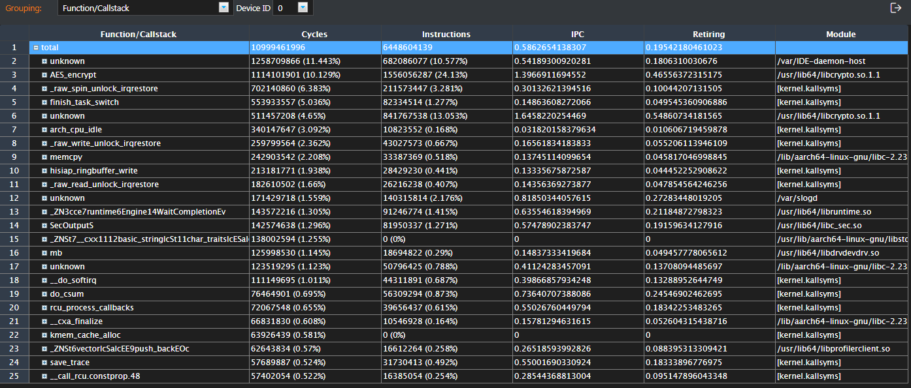

Control CPU Function
As long as Control CPU Profiling is enabled in the Hardware configuration area, the Control CPU Function tab page is generated. The top functions of the control CPU during profiling are ranked by Cycles by default, as shown in Figure 1.
You can click  next to the table to export the data to an Excel file on the local PC.
next to the table to export the data to an Excel file on the local PC.
Figure 1 Control CPU Function tab page

Configure the Control CPU Binary/Symbol Search and Control CPU C/C++ Source Search paths on the Configuration tab page. On the Control CPU Function tab page, select Module/Fucntion/Callstack in the Grouping area, double-click the function name to jump to the source code of the corresponding function.
NOTE:
~/tools is the default toolpath setting, which can be customized during Mind Studio installation. You can view the value of toolpath in the scripts/env.conf file. You can run the find / -name 'env.conf' command to view the location of the env.conf file in the script directory.
The procedure is as follows:
Go to the Control CPU Function tab page, select Module/Fucntion/Callstack, view the path of the binary application file to which the function belongs on the device, and record the path.
For example, in the example shown in Figure 2, the binary application file libcrypto.so.1.1 is stored in the /usr/lib64 directory on the device.
Log in to the Mind Studio server as the Mind Studio installation user and obtain the aarch64-linux-gnu-objdump and aarch64-linux-gnu-addr2line tools from the ~/tools/che/ddk/ddk/toolchains/aarch64-linux-gcc6.3/bin directory. Run the following commands:
./aarch64-linux-gnu-objdump -S binary file path: Obtains the address of the assembly instructions.
./aarch64-linux-gnu-addr2line -ie libcrypto.so.1.1 Specific assembly instruction address: Obtains the source code path.
NOTE: - The binary file must contain the symbol information (not stripped). That is, the debug version compiled by using the -g option is used. Otherwise, the source code path cannot be obtained after the addr2line command is executed.
- objdump and addr2line are third-party open source tools. You can look up the parameters of them yourself.
- For Mind Studio on the developer board, you can obtain the aarch64-linux-gnu-objdump and aarch64-linux-gnu-addr2line tools from the /usr/bin directory on the Mind Studio server.
Go to the Configuration tab and click Modify next to Control CPU Binary/Symbol Search. Set the path to the tools path of the Mind Studio installation directory on the server, for example, /home/ascend/tools/demo.
Similarly, click Modify next to Control CPU C/C++ Source Search. Set the path to the tools path of the Mind Studio installation directory on the server, for example, /home/ascend/tools/demo.
Create the binary file path recorded in 1 in the path configured in 3. Create the source code path recorded in 2 in the path configured in 4.
For example, create the usr/lib64 directory in ~/tools/demo.
NOTE: - If the binary file path and source code path are not in the standard Linux absolute path format, directly save the binary file and source code in the root directory of the configuration path described in Step 3.
- If the binary file path and source code path contain invalid characters such as [ \ ' ; * ? ~ ` ! @ # $ % ^ & + = ) ( < > { } ] | ", the function cannot be used.
Copy the binary files on the device side to the directory created in 5, for example, ~/tools/demo/usr/lib64.
Go to the Control CPU Function tab and double-click any function in the red frame. The assembly code and source code corresponding to the function is displayed.


Ensure that the path is the tools path in the home directory of the Mind Studio installation user.